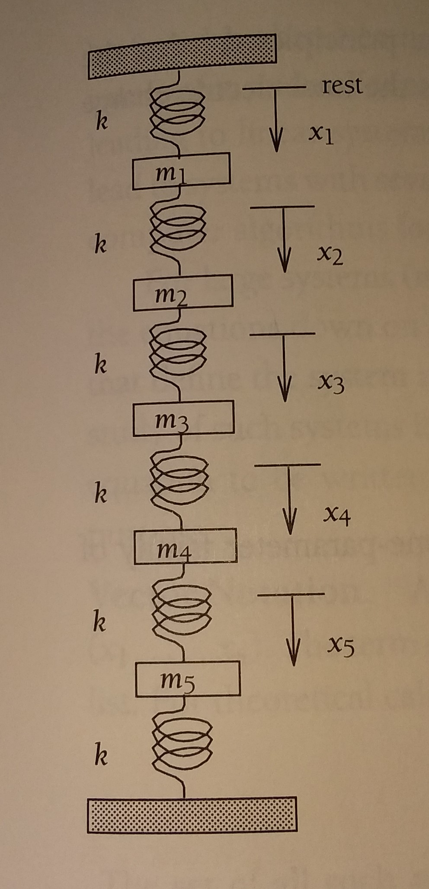

Lab 8. Linear Algebra Lab/HW#
This activity will explore the code behind some linear algebra techniques and some applications using routines from python libraries. Make sure to put a text cell with your name at the top.
import numpy as np
import matplotlib.pyplot as plt
%matplotlib inline
from sympy import *
Task 1. Equilibrium#
Consider the network of springs and masses below.
{kind=link}
Assume \(k = g = 9.8\) for all the springs and that the system is in equilibrium, i.e. not moving. Let \(m_1 = 1, m_2=2, ... , m_5 =5\).
Set up a system of equations representing the force balance.
Write this system in matrix vector form.
Implement this matrix and vector in python.
Solve the system using python.
Task 2 Chemical Reaction balance#
Potassium is denoted by \(K\), oxygen by \(O\), phosphorus by \(P\), and hydrogen by \(H\). Consider the reaction given by
Balance this equation, i.e. find \(x,y,z,w\) such that
Be sure to show the steps you take using python to solve this.
Task 3 Tanks#
Pure water flows into a 100 gallon tank of saltwater at 5 gallons per minute. The saltwater is perfectly mixed and flows out of this tank into a second tank with volume 200 gallons at 5 gallons per minute. This saltwater is also perfectly mixed and flows out of the second tank at 5 gallons per minute. Assume there is initially 50 pounds of salt in each tank.
Set up a system of differential equations for the salt in each tank.
Write this system in matrix-vector form.
Use python to perform the calculations necessary to find the amount of salt in the second tank at time \(t\).
Write the solution in a text cell below.
Last Task - Save your work as both a pdf and a ipynb file and upload to Canvas.#
Files not saved as pdfs or incorrectly uploaded files will not earn any points. You can double-check your submissions.